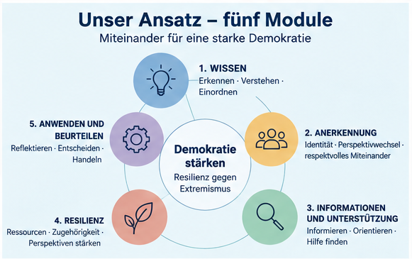
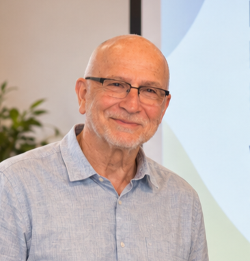

Extremistische Ideologien – ob religiös begründet, rechts- oder linksextrem geprägt – können demokratische Werte, gesellschaftlichen Zusammenhalt und ein respektvolles Miteinander gefährden. Bildungseinrichtungen kommt daher eine wichtige Rolle in der Demokratiebildung und der Prävention extremistischer Einstellungen und Radikalisierungsprozesse zu.¹
Genau hier setzt unser Bildungsangebot „Demokratie stärken – Resilienz gegen Extremismus“ an.
Das Projekt verbindet Demokratiebildung und Extremismusprävention mit einem ressourcen- und handlungsorientierten Bildungsansatz. Ziel ist es, Lernende sowie Multiplikatorinnen und Multiplikatoren dabei zu unterstützen,
- extremistische Narrative und Ideologien zu erkennen, einzuordnen und kritisch zu hinterfragen,
- demokratische Werte zu verstehen und zu reflektieren,
- manipulative Strategien extremistischer Akteure und Gruppierungen zu durchschauen,
- gesellschaftliche Zugehörigkeit und demokratische Teilhabe zu stärken,
- verlässliche Informations-, Beratungs- und Unterstützungsmöglichkeiten kennenzulernen sowie
- individuelle Resilienz und Handlungssicherheit im Umgang mit extremistischen und demokratiefeindlichen Positionen aufzubauen.
Fachliche Grundlage und Entstehung
Die fachliche Grundlage des Projekts bildet die Masterarbeit von Eleonora Rachor (geb. Josifovska) mit dem Titel „Frühzeitig vorbeugen: Erstellung und experimentelle Durchführung eines Unterrichtsmoduls in den Integrationskursen zur Prävention von salafistischer Radikalisierung“.
Im Rahmen dieser Arbeit entwickelte Eleonora Rachor, Diplom-Germanistin und M.A. Fremdsprachenlinguistin, ein modular aufgebautes Unterrichtskonzept sowie das Lehrerhandbuch „Resilienz gegen Extremismus“ inklusive Arbeitsmaterialien.
Ausgangspunkt waren Erfahrungen aus der Unterrichtspraxis sowie die Frage, wie Lehrende mit problematischen und möglicherweise radikalen Einstellungen und Äußerungen umgehen können und wie Lernende gleichzeitig präventiv gestärkt werden können.
Das ursprüngliche Lehrerhandbuch umfasste fünf Unterrichtseinheiten mit einem zeitlichen Rahmen von insgesamt sieben bis zehn Unterrichtsstunden und war insbesondere für den DaF-/DaZ-Bereich sowie für Politische Bildung, Ethik/Religion und Gesellschaftslehre konzipiert.²
Das Unterrichtsmodul wurde im Rahmen der Masterarbeit in einem Integrationskurs explorativ erprobt und wissenschaftlich begleitet. Dabei kamen sowohl qualitative als auch quantitative Methoden zum Einsatz.
Auf dieser Grundlage wurde das Konzept weiterentwickelt. Gemeinsam mit dem Sozialarbeiter und Lerntherapeuten Volker Schwinghammer wird der ursprüngliche Ansatz heute fachlich und didaktisch erweitert, auf weitere Alters- und Zielgruppen übertragen und um zusätzliche Erscheinungsformen des Extremismus sowie aktuelle gesellschaftliche Herausforderungen ergänzt.
Aus dem ursprünglich auf die Prävention salafistischer Radikalisierung im Kontext von Integrationskursen ausgerichteten Unterrichtskonzept entsteht damit das heutige, phänomenübergreifende Bildungsangebot „Demokratie stärken – Resilienz gegen Extremismus“.
Unser Ansatz: fünf miteinander verbundene Module

Das heutige Konzept baut auf den zentralen Ebenen des ursprünglichen Curriculums und seiner Weiterentwicklung auf. Diese werden für das Projekt „Demokratie stärken – Resilienz gegen Extremismus“ als fünf miteinander verbundene Module weitergeführt.
Je nach Zielgruppe, Alter, Sprachniveau, pädagogischem Kontext und gewünschtem Schwerpunkt können die Module einzeln eingesetzt oder miteinander kombiniert werden.
Modul 1 – WISSEN
Erkennen · Verstehen · Einordnen
Wissen bildet eine wichtige Grundlage, um extremistische und demokratiefeindliche Positionen erkennen und kritisch einordnen zu können. Das Modul vermittelt – alters- und zielgruppengerecht – Grundlagen zu Demokratie, Extremismus, Radikalisierung und unterschiedlichen ideologischen Erscheinungsformen.
- Demokratie und demokratische Grundwerte
- Extremismus und Radikalisierung
- religiös begründeter Extremismus und Islamismus
- Rechtsextremismus und Linksextremismus
- Verschwörungsideologien und Desinformation
- extremistische Narrative und Feindbilder
- manipulative Strategien extremistischer Akteure und Gruppierungen
- aktuelle beziehungsweise ideologisch schwer einzuordnende Gewaltphänomene
Ziel ist nicht allein die Vermittlung von Begriffswissen. Lernende sollen vielmehr darin unterstützt werden, Informationen zu prüfen, Zusammenhänge zu verstehen und unterschiedliche Positionen differenziert einzuordnen.
Modul 2 – ANERKENNUNG
Identität · Perspektivwechsel · respektvolles Miteinander
Bereits das ursprüngliche Curriculum berücksichtigte Anerkennung als einen wichtigen Bestandteil präventiver Bildungsarbeit. Im heutigen Konzept wird dieser Ansatz erweitert. Im Mittelpunkt stehen Fragen nach Identität, Zugehörigkeit, Wertschätzung, unterschiedlichen Lebenswelten und einem respektvollen Umgang miteinander.
- Was bedeutet Zugehörigkeit?
- Welche unterschiedlichen Identitäten und Lebensentwürfe gibt es?
- Wie entstehen Vorurteile und Feindbilder?
- Wie können unterschiedliche religiöse, kulturelle oder gesellschaftliche Perspektiven respektvoll miteinander diskutiert werden?
- Wie kann ein konstruktiver Umgang mit unterschiedlichen Meinungen gelingen?
Das Modul schafft Räume für Perspektivwechsel und Reflexion, ohne kontroverse gesellschaftliche oder politische Positionen auszublenden.
Modul 3 – ZUGANG ZU INFORMATIONEN UND UNTERSTÜTZUNG
Informieren · Orientieren · Hilfe finden
Ein weiterer Grundgedanke des ursprünglichen Lehrerhandbuchs war der handlungsrelevante Zugang zu Informationen. Lernende und Multiplikatorinnen und Multiplikatoren sollen wissen, wo sie verlässliche Informationen erhalten und an wen sie sich wenden können, wenn sie mit problematischen Entwicklungen, Krisensituationen oder möglichen Radikalisierungsprozessen konfrontiert werden.
- Wie verlässliche von problematischen Informationsquellen unterschieden werden können
- Welche Beratungs- und Unterstützungsangebote existieren
- Wo bei Fragen zu Extremismus und Radikalisierung fachliche Beratung zu finden ist
- Welche Handlungsmöglichkeiten bei Unsicherheit bestehen
- Wann professionelle Unterstützung sinnvoll sein kann
Damit soll aus abstraktem Wissen konkretes Orientierungs- und Handlungswissen entstehen.
Modul 4 – RESILIENZ
Ressourcen · Zugehörigkeit · Perspektiven stärken
Der Begriff Resilienz ist seit der Entwicklung des ursprünglichen Lehrerhandbuchs ein zentraler Bestandteil des Konzepts. Bereits dort wurde Resilienz als Stärkung von Ressourcen, Kompetenzen, Perspektiven und gesellschaftlichem Zugehörigkeitsgefühl verstanden. Daran knüpft das heutige Projekt an.
- eigene Stärken und Ressourcen wahrnehmen
- Selbstwirksamkeit erfahren
- gesellschaftliche Zugehörigkeit reflektieren und stärken
- demokratische Beteiligungsmöglichkeiten kennenlernen
- positive Zukunftsperspektiven entwickeln
- unterschiedliche Perspektiven aushalten und reflektieren
- konstruktive Handlungsmöglichkeiten entwickeln
Resilienz gegen Extremismus bedeutet in unserem Bildungsansatz nicht, Menschen gegenüber bestimmten Meinungen „unempfindlich“ zu machen. Vielmehr geht es darum, persönliche und soziale Ressourcen zu stärken, die einen reflektierten und handlungssicheren Umgang mit extremistischen und demokratiefeindlichen Narrativen unterstützen können.
Modul 5 – ANWENDEN UND BEURTEILEN
Reflektieren · Entscheiden · Handeln
Wissen allein führt noch nicht automatisch zu Handlungssicherheit. Deshalb bildet die Anwendung des Gelernten einen weiteren zentralen Bestandteil des Konzepts. In diesem Modul werden die Inhalte der vorherigen Module auf konkrete, möglichst lebensnahe Situationen übertragen.
- Aussagen und Situationen kritisch beurteilen
- zwischen kontroversen, radikalen, extremistischen und demokratiefeindlichen Positionen differenzieren
- manipulative Narrative erkennen
- unterschiedliche Handlungsmöglichkeiten abwägen
- angemessene Reaktionen auf problematische Äußerungen entwickeln
- Informationen und Unterstützungsangebote situationsgerecht nutzen
- eigene Entscheidungen begründen und reflektieren
Damit verbindet das fünfte Modul Wissen, Reflexion, Resilienz und konkretes Handeln.
Flexibler und phänomenübergreifender Aufbau
Das Konzept verfolgt einen phänomenübergreifenden Ansatz und nimmt unterschiedliche Formen extremistischer und demokratiefeindlicher Einstellungen sowie mögliche Wechselwirkungen zwischen diesen in den Blick.³
Die fünf Module bilden dabei einen gemeinsamen didaktischen Rahmen. Ihre konkrete Ausgestaltung ist jedoch nicht starr. Abhängig von Alter, Sprachniveau, Zielgruppe, institutionellem Kontext und gewünschtem Schwerpunkt können Inhalte ausgewählt, angepasst und miteinander kombiniert werden.
Aktuelle gesellschaftspolitische Entwicklungen und neu auftretende Phänomene können bedarfsgerecht einbezogen werden. Dazu können auch Gewaltphänomene gehören, die sich nicht eindeutig etablierten extremistischen Ideologien oder Phänomenbereichen zuordnen lassen.
Die Zielgruppen
Das Bildungsangebot richtet sich an unterschiedliche Alters- und Zielgruppen in staatlichen und gemeinnützigen Bildungseinrichtungen.
Je nach Thema, Zielsetzung und Entwicklungsstand können ausgewählte und entsprechend altersgerecht aufbereitete Module bereits ab der 4. Jahrgangsstufe eingesetzt werden. Diese Erweiterung gehört zur Weiterentwicklung des Projekts ab 2026; das ursprüngliche Lehrerhandbuch von 2018 war für Teilnehmende ab 14 Jahren konzipiert.
- Mittel-, Real- und Berufsschulen
- weitere schulische Bildungsbereiche
- die Erwachsenenbildung
- den DaF-/DaZ-Unterricht, insbesondere Integrations- und Berufssprachkurse
- Einrichtungen der Jugendarbeit
- Familienstützpunkte sowie
- vergleichbare Bildungs- und Begegnungseinrichtungen
Neben Lernenden richtet sich das Angebot ausdrücklich an Multiplikatorinnen und Multiplikatoren, beispielsweise Lehrkräfte, pädagogische Fachkräfte, Sozialpädagoginnen und Sozialpädagogen sowie weitere Personen, die mit Kindern, Jugendlichen oder Erwachsenen arbeiten.
Unsere Formate
Unterrichtsmodule und Workshops
Für Schülerinnen und Schüler, Jugendliche und erwachsene Lernende können einzelne Module oder miteinander kombinierte Workshops angeboten werden. Inhalte, Methoden und sprachliche Anforderungen werden an die jeweilige Gruppe angepasst.
Fortbildungen und Workshops für Multiplikatorinnen und Multiplikatoren
Lehrkräfte und andere pädagogische Fachkräfte können mit den fachlichen Grundlagen, Materialien und Methoden des Konzepts vertraut gemacht werden. Dabei geht es insbesondere darum, Handlungssicherheit zu fördern und Möglichkeiten aufzuzeigen, wie ausgewählte Inhalte und Methoden in der eigenen pädagogischen Praxis eingesetzt werden können.
Vorträge und Informationsveranstaltungen
Für Eltern, pädagogische Fachkräfte, Bildungseinrichtungen und weitere interessierte Gruppen können außerdem Vorträge und Informationsveranstaltungen angeboten werden. Themen, Umfang und Schwerpunkt werden entsprechend dem jeweiligen Bedarf abgestimmt.
Durchführung und Multiplikatorenansatz
Eleonora Rachor und Volker Schwinghammer führen die Bildungsangebote, Unterrichtsmodule, Workshops, Fortbildungen und Veranstaltungen auf Anfrage selbst durch.
Darüber hinaus können interessierte Multiplikatorinnen und Multiplikatoren mit den Materialien, Inhalten und Methoden vertraut gemacht werden, um ausgewählte Module anschließend in ihrer eigenen pädagogischen Praxis einzusetzen.
Auf diese Weise verbindet das heutige Projekt die direkte Bildungsarbeit mit Lernenden mit der Qualifizierung pädagogischer Fachkräfte.
Dieser Multiplikatorenansatz knüpft an die frühere Weiterentwicklung des Curriculums an, in der bereits Fortbildungsreihen zur Befähigung von Lehrenden sowie eine fachliche Begleitung der Umsetzung vorgesehen waren.
Von der Anfrage zum passenden Bildungsangebot
- Kontaktaufnahme – Sie schildern uns Ihre Einrichtung, Ihre Zielgruppe und Ihren Bedarf.
- Gemeinsame Abstimmung – Wir klären gemeinsam Zielsetzung, gewünschte Themen, zeitlichen Umfang und organisatorische Rahmenbedingungen.
- Auswahl der Module – Aus den fünf Modulen werden passende Inhalte und Schwerpunkte ausgewählt und miteinander kombiniert.
- Zielgruppengerechte Anpassung – Methoden, Materialien und sprachliche Anforderungen werden an Alter, Sprachniveau, Vorkenntnisse und institutionellen Kontext angepasst.
- Durchführung – Das abgestimmte Bildungsangebot wird von uns durchgeführt.
Über uns
Eleonora Rachor
Diplom-Germanistin | M.A. Fremdsprachenlinguistik
Eleonora Rachor ist Projektentwicklerin im Bereich Demokratiebildung sowie Radikalisierungs- und Extremismusprävention. Die fachliche Grundlage des heutigen Projekts geht auf ihre Masterarbeit und das von ihr entwickelte Lehrerhandbuch „Resilienz gegen Extremismus“ inklusive Arbeitsmaterialien zurück. Die ursprüngliche Konzeption entstand im Kontext ihrer wissenschaftlichen und praktischen Beschäftigung mit Radikalisierungsprävention und Bildungsarbeit und wurde im Rahmen ihrer Masterarbeit explorativ erprobt und wissenschaftlich untersucht.

Volker Schwinghammer
Sozialarbeiter | Integrativer Lerntherapeut
Volker Schwinghammer ist Projektentwickler im Bereich Demokratiebildung sowie Radikalisierungs- und Extremismusprävention. Er bringt insbesondere seine sozialarbeiterische, pädagogische und lerntherapeutische Perspektive in die Weiterentwicklung und Durchführung des heutigen Bildungsangebots ein.
Projektstart
Das weiterentwickelte Projekt „Demokratie stärken – Resilienz gegen Extremismus“ startet im Schulhalbjahr 2026/27.
Unterrichtsmodule, Workshops, Fortbildungen, Vorträge und Informationsveranstaltungen können auf Anfrage individuell an die jeweilige Bildungseinrichtung, Zielgruppe, Altersstufe, Zielsetzung und das vorhandene Sprachniveau angepasst werden.
Häufige Fragen
Müssen immer alle fünf Module durchgeführt werden?
Nein. Das Konzept ist modular aufgebaut. Abhängig von Zielgruppe, Zeitrahmen und Zielsetzung können einzelne Module ausgewählt oder mehrere Module miteinander kombiniert werden.
Für welche Altersgruppen ist das Angebot geeignet?
Je nach Thema und Zielsetzung können ausgewählte, altersgerecht aufbereitete Module bereits ab der 4. Jahrgangsstufe eingesetzt werden. Darüber hinaus richten sich die Angebote an Jugendliche, Erwachsene und pädagogische Multiplikatorinnen und Multiplikatoren.
Wie lange dauert ein Bildungsangebot?
Dauer und Umfang richten sich nach Zielgruppe, ausgewählten Modulen und Zielsetzung. Möglich sind einzelne Unterrichtseinheiten beziehungsweise Workshops ebenso wie umfangreichere oder mehrteilige Formate.
Sind die Angebote auch für Integrations- und Berufssprachkurse geeignet?
Ja. Das ursprüngliche Konzept wurde für den Kontext von Integrationskursen entwickelt. Die Inhalte können entsprechend dem vorhandenen Sprachniveau angepasst werden.
Werden die Inhalte individuell angepasst?
Ja. Alter, Sprachniveau, Vorkenntnisse, institutioneller Kontext, gewünschte Themen und Zielsetzung werden bei der Planung berücksichtigt.
Bieten Sie Fortbildungen für Lehrkräfte und pädagogische Fachkräfte an?
Ja. Der Multiplikatorenansatz ist ein wesentlicher Bestandteil des Projekts. Neben Angeboten für Lernende können Workshops und Fortbildungen für pädagogische Fachkräfte durchgeführt werden.
Was kostet ein Workshop oder eine Fortbildung?
Die Kosten richten sich nach Format, Umfang, Dauer, Vorbereitungsaufwand und organisatorischen Rahmenbedingungen. Nach einer ersten Abstimmung kann ein individuelles Angebot erstellt werden.
Kontakt und weitere Informationen
Sie interessieren sich für einen Workshop, ein Unterrichtsmodul, eine Fortbildung, einen Vortrag oder eine Informationsveranstaltung?
Wir entwickeln gemeinsam mit Ihnen ein Bildungsangebot, das zu Ihrer Einrichtung, Ihrer Zielgruppe und Ihrer Fragestellung passt.
Gemeinsamer Projektkontakt
Demokratie stärken – Resilienz gegen Extremismus
E-Mail: info.demokratie.staerken@gmail.com
Ihre Ansprechpartner
Eleonora Rachor – Diplom-Germanistin | M.A. Fremdsprachenlinguistik
Projektentwicklerin im Bereich Demokratiebildung und Radikalisierungs- und Extremismusprävention
Web: www.eleonora-rachor.com
Volker Schwinghammer – Sozialarbeiter | Integrativer Lerntherapeut
Projektentwickler im Bereich Demokratiebildung und Radikalisierungs- und Extremismusprävention
Web: lerntherapie-schwinghammer.de
Quellenhinweise
¹ Vgl. Kultusministerkonferenz (KMK): Demokratiebildung; Michael Kiefer: Radikalisierungsprävention in der Schule – Voraussetzungen und Handlungsfelder im Bereich Islamismus, Bundeszentrale für politische Bildung (bpb), 2022.
² Vgl. Josifovska, Eleonora (2018): Resilienz gegen Extremismus. Lehrerhandbuch inkl. Arbeitsmaterialien. Das ursprüngliche Konzept war für DaF-/DaZ-Kurse sowie Politische Bildung, Ethik/Religion und Gesellschaftslehre vorgesehen, ab 14 Jahren bzw. Sprachniveau A2, mit fünf Unterrichtseinheiten und einem Umfang von sieben bis zehn Unterrichtsstunden.
³ Vgl. Freiheit, Manuela / Uhl, Andreas / Zick, Andreas (2022): Phänomenübergreifende Radikalisierungsprävention. Erkenntnisse aus dem Forschungsprojekt MAPEX, Bundeszentrale für politische Bildung (bpb).